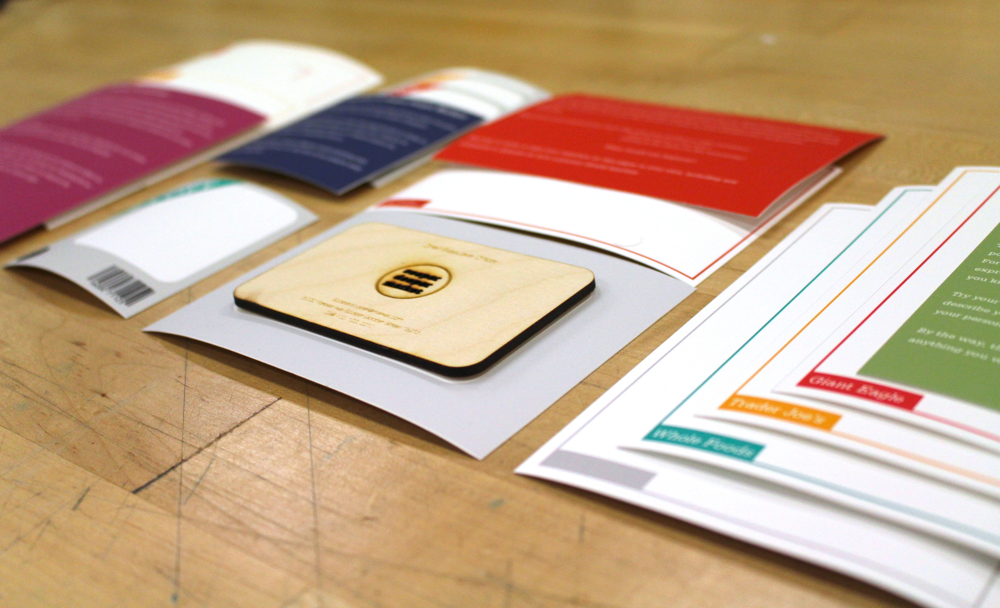
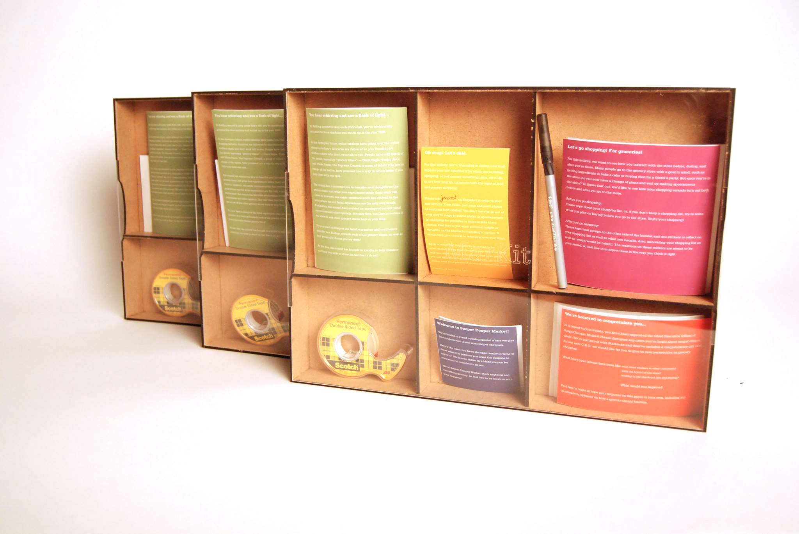

Working with Ji Tae Kim and Jasper Tom, I created a cultural probe to gain insights on how people go shopping for groceries.
Following our ideation process, where we discussed what questions we have for those who grocery shop, we created a set of five activities in a kit to give out to multiple participants. These activities ranged from asking the participants to write down their shopping list to sending us Snapchat photos of them grocery shopping.




A week later, we got the cultural probes back from the participants and analyzed the results from them, as well as a short generative workshop held in class. From the variety of responses we got, we created an affinity diagram to try and group common themes between each participant's set of responses. Our group discovered found that grocery shoppers appreciate the stores that have a more friendly, personal atmosphere such as Trader Joe's. Additionally, we noticed that despite people creating shopping lists, many do not follow them and purchase other items or forget to purchase what they had originally planned. Through our research, These issues and the option of personlization are the themes we found most important to tackle in the creation of a grocery shopping app.